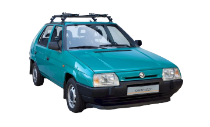
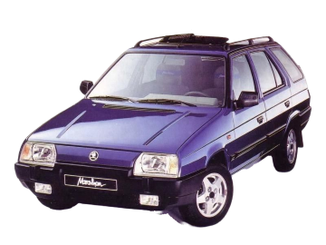
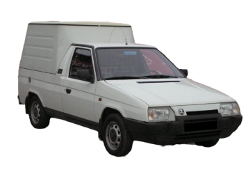

Historie modelu



Mladoboleslavská automobilka vyráběla v období 1905–1963 prakticky výlučně vozy klasické koncepce, tedy s motorem uloženým podélně vpředu a pohonem zadních kol. V roce 1964 odstartoval sedan Š 1000 MB nástup zcela nové generace vozů ŠKODA s motorem u poháněných zadních kol. Toto řešení bohužel neumožňovalo nabídnout zákazníkům širší spektrum provedení karoserie ani vytvořit objemný a snadno přístupný zavazadlový prostor.
Přechod na perspektivní uspořádání s motorem napříč u poháněných předních kol odstartovalo v prosinci 1982 rozhodnutí československé vlády, výroba měla být zahájena do pěti let. Tým vysoce kvalifikovaných, obětavých a motivovaných pracovníků s hlubokým zájmem o značku ŠKODA dokázal v šibeniční lhůtě a navzdory řadě překážek tehdejšího centrálně řízeného hospodářství vyvinout kompaktní automobil plně srovnatelný se západní konkurencí.
Renomované studio Stile Bertone z italského Turína bylo pověřeno návrhem designu hatchbacku, sedanu a kupé, dále zhotovením vzoru interiéru a výrobou 19 prototypových karoserií různých provedení, včetně kombi. Samotné konstrukce karoserie se všakna výbornou zhostil tým mladoboleslavské automobilky. FAVORIT znamenal výrazný mezigenerační pokrok. Přestože byl o 40 mm kratší než předchůdce ŠKODA 120, nabídl o 85 mm delší interiér plnohodnotného rodinného vozu. Ještě náročnější zákazníky oslovilo pozdější kombi FORMAN.
Mimořádnou pozornost věnovali vývojáři zkouškám životnosti nové konstrukce, a to v laboratorních podmínkách i v alpském terénu a teplém klimatu Riviéry. Specialisté automobilky ŠKODA spolupracovali s renomovanými zahraničními odborníky. Například společnost Porsche pomáhala řešit uložení motoru, geometrii přední nápravy a snížení hlučnosti v interiéru. Model FAVORIT poháněl výrazně modernizovaný hliníkový čtyřválec ŠKODA OHV o objemu 1289 cm3 a výkonu 46 či 43 kW, splňující nové přísné emisní předpisy. Životnost čtyřválce se podařilo podstatně zvýšit, a to na 250 000 kilometrů do generální opravy, při současném snížení hlučnosti, spotřeby i emisí.
ŠKODA FAVORIT, oficiálně představená 16. září 1987, zpočátku vznikala v závodě Vrchlabí, sériová produkce v Mladé Boleslavi odstartovala v srpnu 1988. Verze FAVORIT 136 L (de Luxe) stála 84 600 Kčs při průměrném hrubém měsíčním platu asi 3070 korun. Společenské změny a přechod k tržnímu hospodářství po sametové revoluci v listopadu 1989 vedly k hledání silného strategického partnera, který by zajistil automobilce ŠKODA dlouhodobou prosperitu. Na jaře 1991 se český podnik stal čtvrtou značkou globálně aktivního koncernu Volkswagen, jehož vedení si uvědomovalo nemalý potenciál automobilky schopné vyvinout jeden z mála moderně řešených nelicenčních osobních automobilů zemí bývalého tzv. Východního bloku. Model FAVORIT průběžně zhodnocovalo zvyšování kvality, technické, bezpečnostní i estetické úrovně. ŠKODA zaznamenala výrazné úspěchy i na nejnáročnějších trzích, podpořené přesvědčivými výkony českého hatchbacku na poli motoristického sportu. Mezi srpnem 1987 a zářím 1994 vzniklo 783 168 vozů ŠKODA FAVORIT, společně s kombi FORMAN a užitkovými deriváty včetně typu PICK-UP se celkem vyrobilo 1 077 126 automobilů. Štafetu poté převzala ŠKODA FELICIA/FELICIA COMBI.
Motory
modelovou řadu Favorit / Forman poháněly standardně pouze benzínové motory.
Ale existoval i jako elektromobil ve standardní verzi i jako pickup
Škoda 781 Favorit
| typ motoru |
roky výroby |
výkon |
| 1,3 135L | 1989 - 1994 | 43KW |
| 1,3 135 | 1990 - 1994 | 44KW |
| 1,3 135 | 1991 - 1994 | 50KW |
| 1,3 135 X,LX,GLX | 1990 - 1994 | 40KW |
| 1,3 135 | 1991 - 1994 | 43KW |
| 1,3 136 | 1990 - 1994 | 45KW |
Škoda 785 Forman

| typ motoru |
roky výroby |
výkon |
| 1,3 135 | 1991 - 1995 | 44KW |
| 1,3 135 | 1994 - 1995 | 50KW |
| 1,3 135 | 1991 - 1995 | 40KW |
| 1,3 135 | 1993 - 1993 | 43KW |
| 1,3 136 | 1991 - 1995 | 45KW |
Škoda 787 Favorit Pickup

| typ motoru |
roky výroby |
výkon |
| 1,3 135 | 1992 - 1997 | 42KW |
| 1,3 135 | 1992 - 1997 | 50KW |
| 1,3 135 | 1992 - 1997 | 40KW |
| 1,3 136 | 1992 - 1997 | 46KW |
recenze